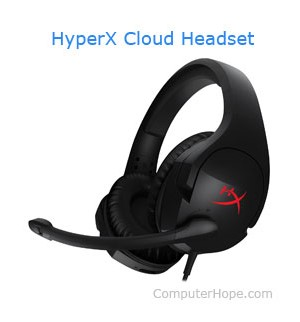

When talking about a computer or a "PC," you are usually referring to a desktop computer that you would find in a home or office. Today, however, the lines of what makes a computer are blurring. Below are all the different examples of what is considered a computer today.

The picture above shows several types of computers and computing devices, and is an example of their differences. Below is a complete list of computers of past and present
An embedded computer is a computer with a specific function, found in such things as ATMs, cars, microwaves, TVs, the VCR, and other home electronics. Gaming computer - Laptop, portable, notebook computer Mainframe, Supercomputer, Server Microcomputer, Nanocomputer, Netbook, PDA, Stick computer Smartphone, Tablet
